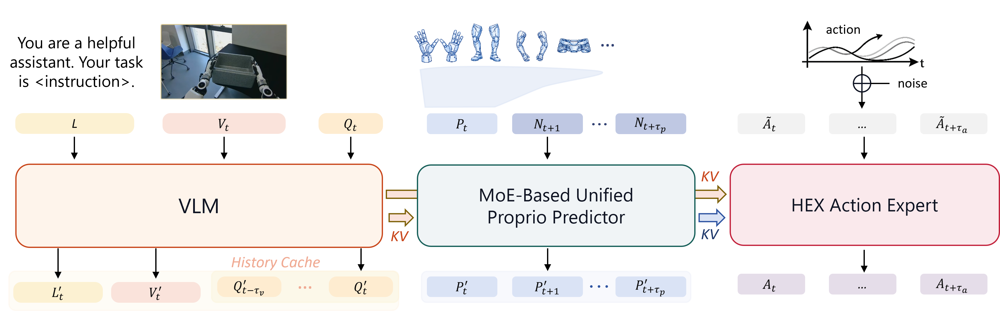
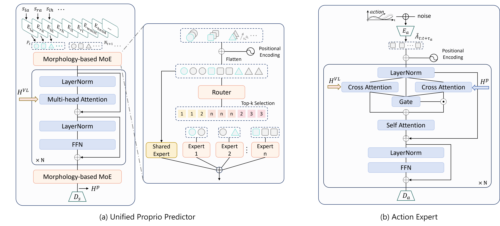
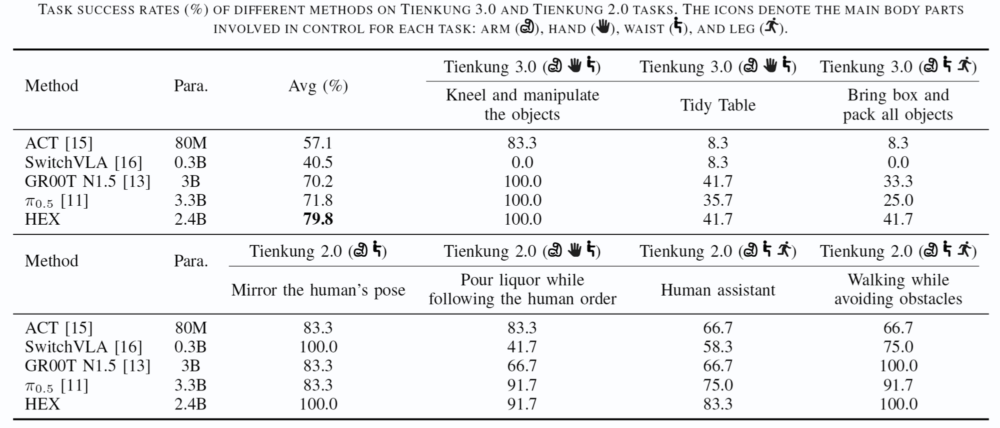
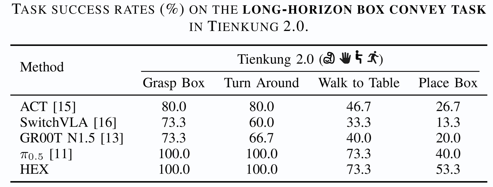
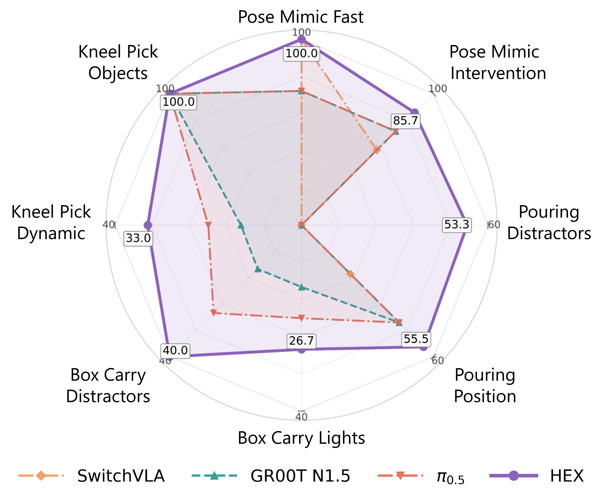
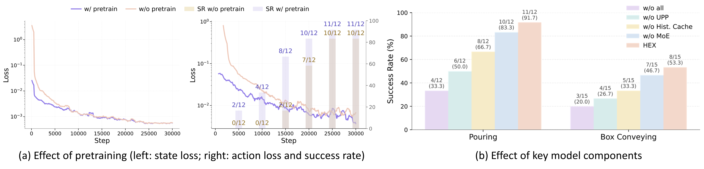
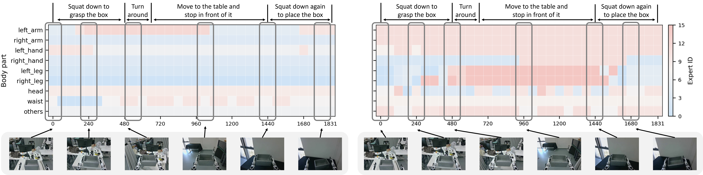
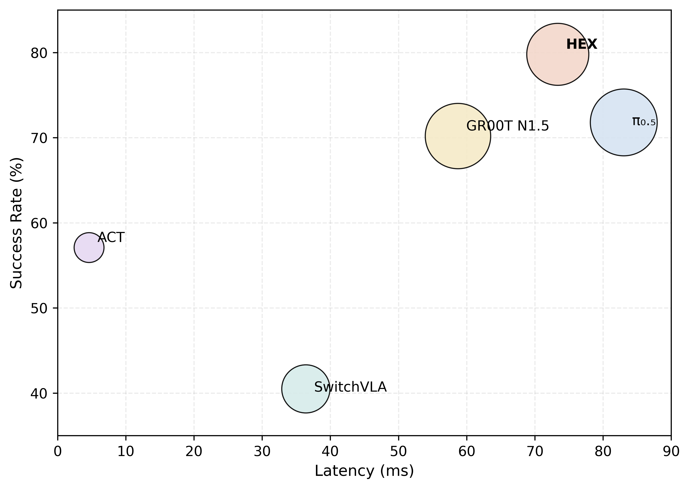

Model Architecture of HEX


HEX is a hierarchical humanoid whole-body manipulation framework for robust cross-embodiment control. It unifies semantic understanding, predictive proprioceptive modeling, and balance-preserving execution in a single architecture.
VLM with History Query Cache
HEX encodes the current visual observation, language instruction, and recent semantic context with a lightweight history-query feature cache, preserving short-term temporal information without repeatedly processing long image histories.
Unified Proprioceptive Predictor (UPP)
UPP organizes heterogeneous humanoid states into canonical body-part representations and predicts short-horizon future dynamics. A morphology-aware MoE enables adaptation across robots with different embodiments, sensors, and state definitions.
Action Expert (AE)
The Action Expert generates high-level manipulation actions by jointly conditioning on visual-language features and predicted proprioceptive dynamics. Adaptive fusion balances semantic intent and dynamic feasibility for robust whole-body execution.
Together, these components enable HEX to transfer across heterogeneous humanoid platforms and perform robust whole-body manipulation in dynamic and contact-rich scenarios.
Experiment Results
Seen and Long-Horizon Scenarios


Seen Scenarios. In in-distribution settings, ACT and SwitchVLA remain competitive despite their smaller scale, while HEX achieves the best overall performance with a stronger balance between success rate, motion smoothness, and reactive execution.
Long-Horizon Scenarios. For multi-stage whole-body manipulation, HEX outperforms all baselines across every stage and shows especially strong gains in the final Place Box stage, indicating better stability and reduced cascading errors.
Unseen Generalization

Unseen Scenarios. Under diverse out-of-distribution shifts, HEX achieves the best overall generalization performance and outperforms all baselines on nearly all variants.
HEX remains robust under fast human motion, human interference, visual distractors, object-position changes, lighting variation, and dynamic scene changes. In particular, in the pouring task with distractors, all baselines collapse to 0% success and often mistake a red plate for the human pointing hand, while HEX avoids this failure mode and reaches 53.3% success.
Analysis Experiments
Ablation Study

Ablation on Pretraining. In our single-task setting, pretraining mainly improves optimization efficiency rather than the final converged performance. It provides better initialization, lower early-stage losses, and much faster improvements in task success, while the gap becomes small after sufficient task-specific training.
Ablation on Model Components. Adding the VLM history cache, the Unified Proprioceptive Predictor (UPP), and the morphology-aware MoE leads to steady performance gains. The UPP has the strongest impact, showing that predictive proprioceptive modeling is a key factor behind HEX’s effectiveness.
MoE Routing Analysis

MoE Routing Analysis. Expert routing before the transformer remains largely stable, reflecting persistent body-part specialization, while routing after the transformer becomes strongly phase-dependent and tracks semantic subtask transitions more clearly. This suggests that post-transformer routing better captures the changing control demands of long-horizon whole-body manipulation.
Latency Analysis

Latency Analysis. HEX achieves the highest overall success rate (79.8%) with 73.34 ms latency on an RTX 4090, outperforming all baselines in task success while remaining faster than π0.5. This shows that HEX offers the strongest overall effectiveness under a practical inference budget.